A one-way hash function, H(M), operates on an arbitrary-length pre-image message, M. It returns a fixed-length hash value, h.
h = H(M), where h is of length m
Many functions can take an arbitrary-length input and return an output of fixed length, but one-way hash functions have additional characteristics that make them one-way [1065]:
Given M, it is easy to compute h. Given h, it is hard to compute M such that H(M) = h. Given M, it is hard to find another message, M’, such that H(M) = H(M’).
If Mallory could do the hard things, he would undermine the security of every protocol that uses the one-way hash function. The whole point of the one-way hash function is to provide a “fingerprint” of M that is unique. If Alice signed M by using a digital signature algorithm on H(M), and Bob could produce M’, another message different from M where H(M) = H(M’), then Bob could claim that Alice signed M’.
In some applications, one-wayness is insufficient; we need an additional requirement called collision-resistance.
It is hard to find two random messages, M and M’, such that H(M) = H(M’).
Remember the birthday attack from Section 7.4? It is not based on finding another message M’, such that H(M) = H(M’), but based on finding two random messages, M and M’, such that H(M) = H(M’).
The following protocol, first described by Gideon Yuval [1635], shows how — if the previous requirement were not true — Alice could use the birthday attack to swindle Bob.
This is a big problem. (One moral is to always make a cosmetic change to any document you sign.)
Other similar attacks could be mounted assuming a successful birthday attack. For example, an adversary could send an automated control system (on a satellite, perhaps) random message strings with random signature strings. Eventually, one of those random messages will have a valid signature. The adversary would have no idea what the command would do, but if his only objective was to tamper with the satellite, this would do it.
Hash functions of 64 bits are just too small to survive a birthday attack. Most practical one-way hash functions produce 128-bit hashes. This forces anyone attempting the birthday attack to hash 264 random documents to find two that hash to the same value, not enough for lasting security. NIST, in its Secure Hash Standard (SHS), uses a 160-bit hash value. This makes the birthday attack even harder, requiring 280 random hashes.
The following method has been proposed to generate a longer hash value than a given hash function produces.
Although this method has never been proved to be either secure or insecure, various people have some serious reservations about it [1262,859].
It’s not easy to design a function that accepts an arbitrary-length input, let alone make it one-way. In the real world, one-way hash functions are built on the idea of a compression function . This one-way function outputs a hash value of length n given an input of some larger length m [1069,414]. The inputs to the compression function are a message block and the output of the previous blocks of text (see Figure 18.1). The output is the hash of all blocks up to that point. That is, the hash of block Mi is
hi = f(Mi, hi- 1)
This hash value, along with the next message block, becomes the next input to the compression function. The hash of the entire message is the hash of the last block.
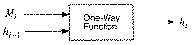
Figure 18.1 One-way function.
The pre-image should contain some kind of binary representation of the length of the entire message. This technique overcomes a potential security problem resulting from messages with different lengths possibly hashing to the same value [1069,414]. This technique is sometimes called MD-strengthening [930].
Various researchers have theorized that if the compression function is secure, then this method of hashing an arbitrary-length pre-image is also secure — but nothing has been proved [1138,1070,414].
A lot has been written on the design of one-way hash functions. For more mathematical information, consult [1028,793,791,1138,1069,414,91,858,1264]. Bart Preneel’s thesis [1262] is probably the most comprehensive treatment of one-way hash functions.
Snefru is a one-way hash function designed by Ralph Merkle [1070]. (Snefru, like Khufu and Khafre, was an Egyptian pharaoh.) Snefru hashes arbitrary-length messages into either 128-bit or 256-bit values.
First the message is broken into chunks, each 512-m in length. (The variable m is the length of the hash value.) If the output is a 128-bit hash value, then the chunks are each 384 bits long; if the output is a 256-bit hash value, then the chunks are each 256 bits long.
The heart of the algorithm is function H, which hashes a 512-bit value into an m-bit value. The first m bits of H’s output are the hash of the block; the rest are discarded. The next block is appended to the hash of the previous block and hashed again. (The initial block is appended to a string of zeros.) After the last block (if the message isn’t an integer number of blocks long, zeros are used to pad the last block), the first m bits are appended to a binary representation of the length of the message and hashed one final time.
Function H is based on E, which is a reversible block-cipher function that operates on 512-bit blocks. H is the last m bits of the output of E XORed with the first m bits of the input of E.
The security of Snefru resides in function E, which randomizes data in several passes. Each pass is composed of 64 randomizing rounds. In each round a different byte of the data is used as an input to an S-box; the output word of the S-box is XORed with two neighboring words of the message. The S-boxes are constructed in a manner similar to those in Khafre (see Section 13.7). Some rotations are thrown in, too. Originally Snefru was designed with two passes.
Using differential cryptanalysis, Biham and Shamir demonstrated the insecurity of two-pass Snefru (128-bit hash value) [172]. Their attack finds pairs of messages that hash to the same value within minutes.
On 128-bit Snefru, their attacks work better than brute force for four passes or less. A birthday attack against Snefru takes 264 operations; differential cryptanalysis can find a pair of messages that hash to the same value in 228.5 operations for three-pass Snefru and 244.5 operations for four-pass Snefru. Finding a message that hashes to a given value by brute force requires 2128 operations; differential cryptanalysis takes 256 operations for three-pass Snefru and 288 operations for four-pass Snefru.
Although Biham and Shamir didn’t analyze 256-bit hash values, they extended their analysis to 224-bit hash values. Compared to a birthday attack that requires 2112 operations, they can find messages that hash to the same value in 212.5 operations for two-pass Snefru, 233 operations for three-pass Snefru, and 281 operations for four-pass Snefru.
Currently, Merkle recommends using Snefru with at least eight passes [1073]. However, with this many passes the algorithm is significantly slower than either MD5 or SHA.
N-Hash is an algorithm invented by researchers at Nippon Telephone and Telegraph, the same people who invented FEAL, in 1990 [1105,1106]. N-Hash uses 128-bit message blocks, a complicated randomizing function similar to FEAL’s, and produces a 128-bit hash value.
The hash of each 128-bit block is a function of the block and the hash of the previous block.
H0 = I, where I is a random initial value Hi = g(Mi, Hi - 1) ⊕ Mi ⊕ Hi - 1
The hash of the entire message is the hash of the last message block. The random initial value, I, can be any value determined by the user (even all zeros).
The function g is a complicated one. Figure 18.2 is an overview of the algorithm. Initially, the 128-bit hash of the previous message block, Hi-1, has its 64-bit left half and 64-bit right half swapped; it is then XORed with a repeating one/zero pattern (128 bits worth), and then XORed with the current message block, Mi. This value then cascades into N(N = 8 in the figures) processing stages. The other input to the processing stage is the previous hash value XORed with one of eight binary constant values.
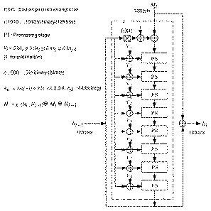
Figure 18.2 Outline of N-Hash.
One processing stage is given in Figure 18.3. The message block is broken into four 32-bit values. The previous hash value is also broken into four 32-bit values. The function f is given in Figure 18.4. Functions S0 and S1 are the same as they were in FEAL.
S0(a,b) = rotate left two bits ((a + b) mod 256) S1(a,b) = rotate left two bits ((a + b + 1) mod 256)
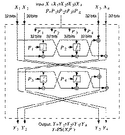
Figure 18.3 One processing stage of N-Hash.
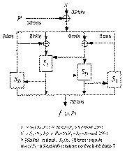
Figure 18.4 Function f.
The output of one processing stage becomes the input to the next processing stage. After the last processing stage, the output is XORed with the Mi and Hi-1, and then the next block is ready to be hashed.
Bert den Boer discovered a way to produce collisions in the round function of N-Hash [1262]. Biham and Shamir used differential cryptanalysis to break 6-round N-Hash [169,172]. Their particular attack (there certainly could be others) works for any N that is divisible by 3, and is more efficient than the birthday attack for any N less than 15.
The same attack can find pairs of messages that hash to the same value for 12-round N-Hash in 256 operations, compared to 264 operations for a brute-force attack. N-hash with 15 rounds is safe from differential cryptanalysis: The attack requires 272 operations.
The algorithm’s designers recommend using N-Hash with at least 8 rounds [1106]. Given the proven insecurity of N-Hash and FEAL (and its speed with 8 rounds), I recommend using another algorithm entirely.
MD4 is a one-way hash function designed by Ron Rivest [1318,1319,1321]. MD stands for Message Digest; the algorithm produces a 128-bit hash, or message digest, of the input message.
In [1319], Rivest outlined his design goals for the algorithm:
Security. It is computationally infeasible to find two messages that
hashed to the same value. No attack is more efficient than brute force.
Direct Security. MD4’s security is not based on any assumption, like the
difficulty of factoring.
Speed. MD4 is suitable for high-speed software implementations. It is
based on a simple set of bit manipulations on 32-bit operands.
Simplicity and Compactness. MD4 is as simple as possible, without
large data structures or a complicated program.
Favor Little-Endian Architectures. MD4 is optimized for
microprocessor architectures (specifically Intel microprocessors); larger
and faster computers make any necessary translations.
After the algorithm was first introduced, Bert den Boer and Antoon Bosselaers successfully cryptanalyzed the last two of the algorithm’s three rounds [202]. In an unrelated cryptanalytic result, Ralph Merkle successfully attacked the first two rounds [202]. Eli Biham discussed a differential cryptanalysis attack against the first two rounds of MD4 [159]. Even though these attacks could not be extended to the full algorithm, Rivest strengthened the algorithm. The result is MD5.
MD5 is an improved version of MD4 [1386,1322]. Although more complex than MD4, it is similar in design and also produces a 128-bit hash.
After some initial processing, MD5 processes the input text in 512-bit blocks, divided into 16 32-bit sub-blocks. The output of the algorithm is a set of four 32-bit blocks, which concatenate to form a single 128-bit hash value.
First, the message is padded so that its length is just 64 bits short of being a multiple of 512. This padding is a single 1-bit added to the end of the message, followed by as many zeros as are required. Then, a 64-bit representation of the message’s length (before padding bits were added) is appended to the result. These two steps serve to make the message length an exact multiple of 512 bits in length (required for the rest of the algorithm), while ensuring that different messages will not look the same after padding.
Four 32-bit variables are initialized:
A = 0x01234567 B = 0x89abcdef C = 0xfedcba98 D = 0x76543210
These are called chaining variables.
Now, the main loop of the algorithm begins. This loop continues for as many 512-bit blocks as are in the message.
The four variables are copied into different variables: a gets A, b gets B, c gets C, and d gets D.
The main loop has four rounds (MD4 had only three rounds), all very similar. Each round uses a different operation 16 times. Each operation performs a nonlinear function on three of a, b, c, and d. Then it adds that result to the fourth variable, a sub-block of the text and a constant. Then it rotates that result to the right a variable number of bits and adds the result to one of a, b, c, or d. Finally the result replaces one of a, b, c, or d. See Figures 18.5 and 18.6.
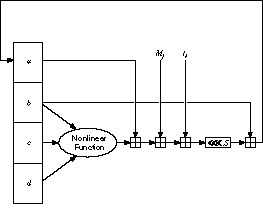
Figure 18.5 MD5 main loop.
Figure 18.6 One MD5 operation.
There are four nonlinear functions, one used in each operation (a different one for each round).
F(X,Y,Z) = (X ∧ Y) ∨ ((¬X) ∧ Z) G(X,Y,Z) = (X ∧ Z) ¬(Y (¬Z)) H(X,Y,Z) = X ⊕ Y ⊕ Z I(X,Y,Z) = Y ⊕ (X ∨ (¬Z))
(⊕ is XOR, ∧ is AND, ∨ is OR, and ¬ is NOT.)
These functions are designed so that if the corresponding bits of X, Y, and Z are independent and unbiased, then each bit of the result will also be independent and unbiased. The function F is the bit-wise conditional: If X then Y else Z. The function H is the bit-wise parity operator.
If Mj represents the jth sub-block of the message (from 0 to 15), and <<<s represents a left circular shift of s bits, the four operations are:
FF(a,b,c,d,Mj ,s,ti) denotes a = b + ((a + F(b,c,d) + Mj + ti) <<<s) GG(a,b,c,d,Mj,s,ti) denotes a = b + ((a + G(b,c,d) + Mj + ti) <<<s) HH(a,b,c,d,Mj,s,ti) denotes a = b + ((a + H(b,c,d) + Mj + ti) <<<s) II(a,b,c,d,Mj,s,ti) denotes a = b + ((a + I(b,c,d) + Mj + ti) <<<s)
The four rounds (64 steps) look like:
Round 1: FF (a, b, c, d, M0, 7, 0xd76aa478) FF (d, a, b, c, M1, 12, 0xe8c7b756) FF (c, d, a, b, M2, 17, 0x242070db) FF (b, c, d, a, M3, 22, 0xc1bdceee) FF (a, b, c, d, M4, 7, 0xf57c0faf) FF (d, a, b, c, M5, 12, 0x4787c62a) FF (c, d, a, b, M6, 17, 0xa8304613) FF (b, c, d, a, M7, 22, 0xfd469501) FF (a, b, c, d, M8, 7, 0x698098d8) FF (d, a, b, c, M9, 12, 0x8b44f7af) FF (c, d, a, b, M10, 17, 0xffff5bb1) FF (b, c, d, a, M11, 22, 0x895cd7be) FF (a, b, c, d, M12, 7, 0x6b901122) FF (d, a, b, c, M13, 12, 0xfd987193) FF (c, d, a, b, M14, 17, 0xa679438e) FF (b, c, d, a, M15, 22, 0x49b40821) Round 2: GG (a, b, c, d, M1, 5, 0xf61e2562) GG (d, a, b, c, M6, 9, 0xc040b340) GG (c, d, a, b, M11, 14, 0x265e5a51) GG (b, c, d, a, M0, 20, 0xe9b6c7aa) GG (a, b, c, d, M5, 5, 0xd62f105d) GG (d, a, b, c, M10, 9, 0x02441453) GG (c, d, a, b, M15, 14, 0xd8a1e681) GG (b, c, d, a, M4, 20, 0xe7d3fbc8) GG (a, b, c, d, M9, 5, 0x21e1cde6) GG (d, a, b, c, M14, 9, 0xc33707d6) GG (c, d, a, b, M3, 14, 0xf4d50d87) GG (b, c, d, a, M8, 20, 0x455a14ed) GG (a, b, c, d, M13, 5, 0xa9e3e905) GG (d, a, b, c, M2, 9, 0xfcefa3f8) GG (c, d, a, b, M7, 14, 0x676f02d9) GG (b, c, d, a, M12, 20, 0x8d2a4c8a) Round 3: HH (a, b, c, d, M5, 4, 0xfffa3942) HH (d, a, b, c, M8, 11, 0x8771f681) HH (c, d, a, b, M11, 16, 0x6d9d6122) HH (b, c, d, a, M14, 23, 0xfde5380c) HH (a, b, c, d, M1, 4, 0xa4beea44) HH (d, a, b, c, M4, 11, 0x4bdecfa9) HH (c, d, a, b, M7, 16, 0xf6bb4b60) HH (b, c, d, a, M10, 23, 0xbebfbc70) HH (a, b, c, d, M13, 4, 0x289b7ec6) HH (d, a, b, c, M0, 11, 0xeaa127fa) HH (c, d, a, b, M3, 16, 0xd4ef3085) HH (b, c, d, a, M6, 23, 0x04881d05) HH (a, b, c, d, M9, 4, 0xd9d4d039) HH (d, a, b, c, M12, 11, 0xe6db99e5) HH (c, d, a, b, M15, 16, 0x1fa27cf8) HH (b, c, d, a, M2, 23, 0xc4ac5665) Round 4: II (a, b, c, d, M0, 6, 0xf4292244) II (d, a, b, c, M7, 10, 0x432aff97) II (c, d, a, b, M14, 15, 0xab9423a7) II (b, c, d, a, M5, 21, 0xfc93a039) II (a, b, c, d, M12, 6, 0x655b59c3) II (d, a, b, c, M3, 10, 0x8f0ccc92) II (c, d, a, b, M10, 15, 0xffeff47d) II (b, c, d, a, M1, 21, 0x85845dd1) II (a, b, c, d, M8, 6, 0x6fa87e4f) II (d, a, b, c, M15, 10, 0xfe2ce6e0) II (c, d, a, b, M6, 15, 0xa3014314) II (b, c, d, a, M13, 21, 0x4e0811a1) II (a, b, c, d, M4, 6, 0xf7537e82) II (d, a, b, c, M11, 10, 0xbd3af235) II (c, d, a, b, M2, 15, 0x2ad7d2bb) II (b, c, d, a, M9, 21, 0xeb86d391)
Those constants, ti, were chosen as follows:
In step i, ti is the integer part of 232*abs(sin(i)), where i is in radians.
After all of this, a, b, c, and d are added to A, B, C, D, respectively, and the algorithm continues with the next block of data. The final output is the concatenation of A, B, C, and D.
Ron Rivest outlined the improvements of MD5 over MD4 [1322]:
Tom Berson attempted to use differential cryptanalysis against a single round of MD5 [144], but his attack is ineffective against all four rounds. A more successful attack by den Boer and Bosselaers produces collisions using the compression function in MD5 [203,1331,1336]. This does not lend itself to attacks against MD5 in practical applications, and it does not affect the use of MD5 in Luby-Rackoff-like encryption algorithms (see Section 14.11). It does mean that one of the basic design principles of MD5 — to design a collision-resistant compression function — has been violated. Although it is true that “there seems to be a weakness in the compression function, but it has no practical impact on the security of the hash function” [1336], I am wary of using MD5.
MD2 is another 128-bit one-way hash function designed by Ron Rivest [801,1335]. It, along with MD5, is used in the PEM protocols (see Section 24.10). The security of MD2 is dependent on a random permutation of bytes. This permutation is fixed, and depends on the digits of π. S0, S1, S2, ..., S255 is the permutation. To hash a message M:
t = 0 For j = 0 to 17 For k = 0 to 47 t = Xk XOR St Xk = t t = (t + j) mod 256
Although no weaknesses in MD2 have been found (see [1262]), it is slower than most other suggested hash functions.
NIST, along with the NSA, designed the Secure Hash Algorithm (SHA) for use with the Digital Signature Standard (see Section 20.2) [1154]. (The standard is the Secure Hash Standard (SHS); SHA is the algorithm used in the standard.) According to the Federal Register [539]:
A Federal Information Processing Standard (FIPS) for Secure Hash Standard (SHS) is being proposed. This proposed standard specified a Secure Hash Algorithm (SHA) for use with the proposed Digital Signature Standard .... Additionally, for applications not requiring a digital signature, the SHA is to be used whenever a secure hash algorithm is required for Federal applications.
And
This Standard specifies a Secure Hash Algorithm (SHA), which is necessary to ensure the security of the Digital Signature Algorithm (DSA). When a message of any length < 264 bits is input, the SHA produces a 160-bit output called a message digest. The message digest is then input to the DSA, which computes the signature for the message. Signing the message digest rather than the message often improves the efficiency of the process, because the message digest is usually much smaller than the message. The same message digest should be obtained by the verifier of the signature when the received version of the message is used as input to SHA. The SHA is called secure because it is designed to be computationally infeasible to recover a message corresponding to a given message digest, or to find two different messages which produce the same message digest. Any change to a message in transit will, with a very high probability, result in a different message digest, and the signature will fail to verify. The SHA is based on principles similar to those used by Professor Ronald L. Rivest of MIT when designing the MD4 message digest algorithm [1319], and is closely modelled after that algorithm.
SHA produces a 160-bit hash, longer than MD5.
First, the message is padded to make it a multiple of 512 bits long. Padding is exactly the same as in MD5: First append a one, then as many zeros as necessary to make it 64 bits short of a multiple of 512, and finally a 64-bit representation of the length of the message before padding.
Five 32-bit variables (MD5 has four variables, but this algorithm needs to produce a 160-bit hash) are initialized as follows:
A = 0x67452301 B = 0xefcdab89 C = 0x98badcfe D = 0x10325476 E = 0xc3d2e1f0
The main loop of the algorithm then begins. It processes the message 512 bits at a time and continues for as many 512-bit blocks as are in the message.
First the five variables are copied into different variables: a gets A, b gets B, c gets C, d gets D, and e gets E.
The main loop has four rounds of 20 operations each (MD5 has four rounds of 16 operations each). Each operation performs a nonlinear function on three of a, b, c, d, and e, and then does shifting and adding similar to MD5.
SHA’s set of nonlinear functions is:
ft(X,Y,Z) = (X ∧ Y) ∨ ((¬X ) ∧ Z), for t = 0 to 19. ft(X,Y,Z) = X ⊕ Y ⊕ Z, for t = 20 to 39. ft(X,Y,Z) = (X∧ Y) ∨ (X ∧ Z) ∨ (Y ∧ Z), for t = 40 to 59. ft(X,Y,Z) = X ⊕ Y ⊕ Z, for t = 60 to 79.
Four constants are used in the algorithm:
Kt = 0x5a827999, for t = 0 to 19.
Kt = 0x6ed9eba1, for t = 20 to 39.
Kt = 0x8f1bbcdc, for t = 40 to 59.
Kt = 0xca62c1d6, for t = 60 to 79.
(If you wonder where those numbers came from: 0x5a827999 = 21/2/4,
0x6ed9eba1 = 31/2/4, 0x8f1bbcdc = 51/2/4, and 0xca62c1d6 = 101/2/4; all
times 232.)
The message block is transformed from 16 32-bit words (M0 to M15 ) to 80 32-bit words (W0 to W79) using the following algorithm:
Wt = Mt, for t = 0 to 15 Wt = (Wt - 3 ⊕ Wt - 8 ⊕ Wt - 14 ⊕ Wt - 16) <<< 1, for t = 16 to 79.
(As an interesting aside, the original SHA specification did not have the left circular shift. The change “corrects a technical flaw that made the standard less secure than had been thought” [543]. The NSA has refused to elaborate on the exact nature of the flaw.)
If t is the operation number (from 0 to 79), Wt represents the tth sub-block of the expanded message, and <<< s represents a left circular shift of s bits, then the main loop looks like:
FOR t = 0 to 79 TEMP = (a <<< 5) + ft(b,c,d) + e + Wt + Kt e = d d = c c = b <<< 30 b = a a = TEMP
Figure 18.7 shows one operation. Shifting the variables accomplishes the same thing as MD5 does by using different variables in different locations.
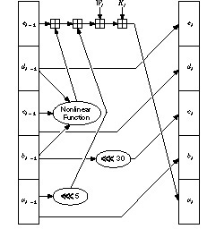
Figure 18.7 One SHA operation.
After all of this, a, b, c, d, and e are added to A, B, C, D, and E respectively, and the algorithm continues with the next block of data. The final output is the concatenation of A, B, C, D, and E.
SHA is very similar to MD4, but has a 160-bit hash value. The main changes are the addition of an expand transformation and the addition of the previous step’s output into the next step for a faster avalanche effect. Ron Rivest made public the design decisions behind MD5, but SHA’s designers did not. Here are Rivest’s MD5 improvements to MD4 and how they compare with SHA’s:
This leads to the following comparison: SHA is MD4 with the addition of an expand transformation, an extra round, and better avalanche effect; MD5 is MD4 with improved bit hashing, an extra round, and better avalanche effect.
There are no known cryptographic attacks against SHA. Because it produces a 160-bit hash, it is more resistant to brute-force attacks (including birthday attacks) than 128-bit hash functions covered in this chapter.
RIPE-MD was developed for the European Community’s RIPE project [1305] (see Section 25.7). The algorithm is a variation of MD4, designed to resist known cryptanalytic attacks, and produce a 128-bit hash value. The rotations and the order of the message words are modified. Additionally, two instances of the algorithm, differing only in the constants, run in parallel. After each block, the output of both instances are added to the chaining variables. This seems to make the algorithm highly resistant to cryptanalysis.
HAVAL is a variable-length one-way hash function [1646]. It is a modification of MD5. HAVAL processes messages in blocks of 1024 bits, twice those of MD5. It has eight 32-bit chaining variables, twice those of MD5. It has a variable number of rounds, from three to five (each of which has 16 steps), and it can produce a hash length of 128, 160, 192, 224, or 256 bits.
HAVAL replaces MD5’s simple nonlinear functions with highly nonlinear 7-variable functions, each of which satisfies the strict avalanche criterion. Each round uses a single function, but in every step a different permutation is applied to the inputs. It has a new message order and every step (except those in the first round) uses a different additive constant. The algorithm also has two rotations.
The core of the algorithm is
TEMP = (f(j,A,B,C,D,E,F,G) <<< 7) + (H <<< 11) + M[i][r (j)] + K(j) H = G; G = F; F = E; E = D; D = C; C = B; B = A; A = TEMP
The variable number of rounds and variable-length output mean there are 15 versions of this algorithm. Den Boer’s and Bosselaers’s attack against MD5 [203] does not apply to HAVAL because of the rotation of H.
MD3 is yet another hash function designed by Ron Rivest. It had several flaws and never really made it out of the laboratory, although a description was recently published in [1335].
A group of researchers at the University of Waterloo have proposed a one-way hash function based on iterated exponentiation in GF(2593) [22]. In this scheme, a message is divided into 593-bit blocks; beginning with the first block, the blocks are successively exponentiated. Each exponent is the result of the computation with the previous block; the first exponent is given by an IV.
Ivan Damgård designed a one-way hash function based on the knapsack problem (see Section 19.2) [414]; it can be broken in about 232 operations [290,1232,787].
Steve Wolfram’s cellular automata [1608] have been proposed as a basis for one-way hash functions. An early implementation [414] is insecure [1052,404]. Another one-way hash function, Cellhash [384,404], and an improved version, Subhash [384,402,405], are based on cellular automata; both are designed for hardware. Boognish mixes the design principles of Cellhash with those of MD4 [402,407]. StepRightUp can be implemented as a hash function as well [402].
Claus Schnorr proposed a one-way hash function based on the discrete Fourier transform, called FFT-Hash, in the summer of 1991 [1399]; it was broken a few months later by two independent groups [403,84]. Schnorr proposed a revised version, called FFT-Hash II (the previous version was renamed FFT-Hash I) [1400], which was broken a few weeks later [1567]. Schnorr has proposed further modifications [1402,1403] but, as it stands, the algorithm is much slower than the others in this chapter. Another hash function, called SL2 [1526], is insecure [315].
Additional theoretical work on constructing one-way hash functions from one-way functions and one-way permutations can be found in [412,1138,1342].
It is possible to use a symmetric block cipher algorithm as a one-way hash function. The idea is that if the block algorithm is secure, then the one-way hash function will also be secure.
The most obvious method is to encrypt the message with the algorithm in CBC or CFB mode, a fixed key, and IV; the last ciphertext block is the hash value. These methods are described in various standards using DES: both modes in [1143], CFB in [1145], CBC in [55,56,54]. This just isn’t good enough for one-way hash functions, although it will work for a MAC (see Section 18.14) [29].
A cleverer approach uses the message block as the key, the previous hash value as the input, and the current hash value as the output.
The actual hash functions proposed are even more complex. The block size is usually the key length, and the size of the hash value is the block size. Since most block algorithms are 64 bits, several schemes are designed around a hash that is twice the block size.
Assuming the hash function is correct, the security of the scheme is based on the security of the underlying block function. There are exceptions, though. Differential cryptanalysis is easier against block functions in hash functions than against block functions used for encryption: The key is known, so several tricks can be applied; only one right pair is needed for success; and you can generate as much chosen plaintext as you want. Some work on these lines is [1263,858,1313].
What follows is a summary of the various hash functions that have appeared in the literature [925,1465,1262]. Statements about attacks against these schemes assume that the underlying block cipher is secure; that is, the best attack against them is brute force.
One useful measure for hash functions based on block ciphers is the hash rate, or the number of n-bit messages blocks, where n is the block size of the algorithm, processed per encryption. The higher the hash rate, the faster the algorithm. (This measure was given the opposite definition in [1262], but the definition given here is more intuitive and is more widely used. This can be confusing.)
The general scheme is as follows (see Figure 18.8):
H0 = IH, where IH is a random initial value Hi = EA(B) ⊕ C
where A, B, and C can be either Mi, H-1, (Mi • Hi - 1), or a constant (assumed to be 0). H0 is some random initial value: IH. The message is divided up into block-size chunks, Mi, and processed individually. And there is some kind of MD-strengthening, perhaps the same padding procedure used in MD5 and SHA.
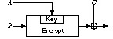
Figure 18.8 General hash function where the hash length equals the block size.
The three different variables can take on one of four possible values, so there are 64 total schemes of this type. Bart Preneel studied them all [1262].
Fifteen are trivially weak because the result does not depend on one of the inputs. Thirty-seven are insecure for more subtle reasons. Table 18.1 lists the 12 secure schemes remaining: The first 4 are secure against all attacks (see Figure 18.9) and the last 8 are secure against all but a fixed-point attack, which is not really worth worrying about.
Table 18.1 - Secure Hash Functions Where the Block Length Equals the Hash Size
Hi = EHi - 1(Mi) ⊕ Mi Hi = EHi - 1(Mi ⊕ Hi - 1) ⊕ Mi ⊕ Hi - 1 Hi = EHi - 1(Mi) ⊕ Hi - 1 ⊕ Mi Hi = EHi - 1(Mi ⊕ Hi - 1) ⊕ Mi Hi = EMi(Hi - 1) ⊕ Hi - 1 Hi = EMi(Mi ⊕ Hi - 1) ⊕ Mi ⊕ Hi - 1 Hi = EMi(Hi - 1) ⊕ Mi ⊕ Hi - 1 Hi = EMi(Mi ⊕ Hi - 1) ⊕ Hi - 1 Hi = EMi ⊕ Hi - 1(Mi) ⊕ Mi Hi = EMi ⊕ Hi - 1(Hi - 1) ⊕ Hi - 1 Hi = EMi ⊕ Hi - 1(Mi) ⊕ Hi - 1 Hi = EMi ⊕ Hi - 1(Hi - 1) ⊕ Mi
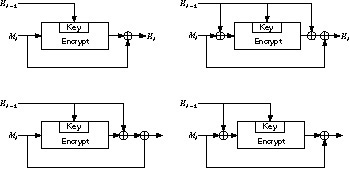
Figure 18.9 The four secure hash functions where the block length equals the hash size.
The first scheme was described in [1028]. The third scheme was described in [1555,1105,1106] and was proposed as an ISO standard [766]. The fifth scheme was proposed by Carl Meyer, but is commonly called Davies-Meyer in the literature [1606,1607,434,1028]. The tenth scheme was proposed as a hash-function mode for LOKI [273].
The first, second, third, fourth, ninth, and eleventh schemes have a hash rate of 1; the key length equals the block length. The others have a rate of k/n, where k is the key length. This means that if the key length is shorter than the block length, then the message block can only be the length of the key. It is not recommended that the message block be longer than the key length, even if the encryption algorithm’s key length is longer than the block length.
If the block algorithm has a DES-like complementation property and DES-like weak keys, there is an additional attack that is possible against all 12 schemes. The attack isn’t very dangerous and not really worth worrying about. However, you can solve it by fixing bits 2 and 3 of the key to “01” or “10” [1081,1107]. Of course, this reduces the length of k from 56 bits to 54 bits (in DES, for example) and decreases the hash rate.
The following schemes, proposed in the literature, have been shown to be insecure.
This scheme [1282] was broken in [369]:
Hi = EMi(Hi - 1)
Davies and Price proposed a variant which cycles the entire message through the algorithm twice [432,433]. Coppersmith’s attack works on this variant with not much larger computational requirements [369].
Another scheme [432,458] was shown insecure in [1606]:
Hi = EMi ⊕ Hi - 1(Hi - 1)
This scheme was shown insecure in [1028] (c is a constant):
Hi = Ec(Mi ⊕ Hi - 1) ⊕ Mi ⊕ Hi - 1
Lai and Massey modified the Davies-Meyer technique to work with the IDEA cipher [930,925]. IDEA has a 64-bit block size and 128-bit key size. Their scheme is
H0 = IH, where IH is a random initial value Hi = EHi- 1,Mi(Hi - 1)
This function hashes the message in blocks of 64 bits and produces a 64-bit hash value (See Figure 18.10).
No known attack on this scheme is easier than brute force.
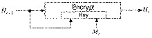
Figure 18.10 Modified Davies-Meyer.
This hash function, first proposed in [1266], produces a hash value twice the block length of the encryption algorithm: A 64-bit algorithm produces a 128-bit hash.
With a 64-bit block algorithm, the scheme produces two 64-bit hash values, Gi and Hi, which are concatenated to produce the 128-bit hash. With most block algorithms, the block size is 64 bits. Two adjacent message blocks, Li and Ri, each the size of the block length, are hashed together.
G0 = IG, where IG is a random initial value H0 = IH, where IH is another random initial value Gi = ELi ⊕ Hi - 1(Ri ⊕ Gi - 1) ⊕ Ri ⊕ Gi - 1 ⊕ Hi - 1 Hi = ELi ⊕ Ri(Hi - 1 ⊕ Gi - 1) ⊕ Li ⊕ Gi - 1 ⊕ Hi - 1
Lai demonstrates attacks against this scheme that, in some instances, make the birthday attack trivially solvable [925,926]. Preneel [1262] and Coppersmith [372] also have successful attacks against this scheme. Do not use it.
This scheme, first proposed in [1279], generates a hash that is twice the block length and has a hash rate of 1. It has two hash values, Gi and Hi, and two blocks, Li and Ri, are hashed together.
G0 = IG, where IG is a random initial value H0 = IH, where IH is another random initial value Wi = ELi(Gi - 1 ⊕ Ri) ⊕ Ri ⊕ Hi - 1 Gi = ERi(Wi ⊕ Li) ⊕ Gi - 1 ⊕ Hi - 1 ⊕ Li Hi = Wi ⊕ Gi - 1
This scheme appeared in a 1989 draft ISO standard [764], but was dropped in a later version [765]. Security problems with this scheme were identified in [1107, 925, 1262, 372]. (Actually, the version in the proceedings was strengthened after the version presented at the conference was attacked.) In some instances the birthday attack is solvable with a complexity of 239, not 264, through brute force. Do not use this scheme.
This algorithm is a modification of Quisquater-Girault, specifically designed to work with LOKI [273]. All parameters are as in Quisquater-Girault.
G0 = IG, where IG is a random initial value H0 = IH, where IH is another random initial value Wi = ELi ⊕ Gi - 1(Gi - 1 ⊕ Ri) ⊕ Ri ⊕ Hi - 1 Gi = ERi ⊕ Hi - 1(Wi ⊕ Li) ⊕ Gi - 1 ⊕ Hi - 1 ⊕ Li Hi = Wi ⊕ Gi - 1
Again, in some instances the birthday attack is trivially solvable [925,926,1262,372,736]. Do not use this scheme.
This is yet another attempt at an algorithm with a hash rate of 1 that produces a hash twice the block length [736].
G0 = IG, where IG is a random initial value H0 = IH, where IH is another random initial value Gi = ELi ⊕ Ri(Gi - 1 ⊕ Li) ⊕ Li ⊕ Hi - 1 Hi = ELi(Hi - 1 ⊕ Ri) ⊕ Ri ⊕ Hi - 1
Unfortunately, this scheme isn’t secure either [928,861]. As it turns out, a double-length hash function with a hash rate of 1 cannot be more secure than Davies-Meyer [861].
Another way around the inherent limitations of a block cipher with a 64-bit key uses an algorithm, like IDEA (see Section 13.9), with a 64-bit block and a 128-bit key. These two schemes produce a 128-bit hash value and have a hash rate of ½ [930,925].
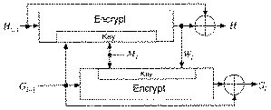
Figure 18.11 Tandem Davies-Meyer.
In this first scheme, two modified Davies-Meyer functions work in tandem (see Figure 18.11).
G0 = IG, where IG is some random initial value H0 = IH, where IH is some other random initial value Wi = EGi- 1,Mi(Hi - 1) Gi = Gi - 1 ⊕ EMi,Wi(Gi - 1) Hi = Wi ⊕ Hi - 1
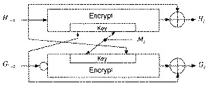
Figure 18.12 Abreast Davies-Meyer.
The following scheme uses two modified Davies-Meyer functions side-by-side (see Figure 18.12).
G0 = IG, where IG is some random initial value H0 = IH, where IH is some other random initial value Gi = Gi - 1 ⊕ EMi,Hi - 1(¬Gi - 1) Hi = Hi - 1 ⊕ EGi- 1,Mi(Hi - 1)
In both schemes, the two 64-bit hash values Gi and Hi are concatenated to produce a single 128-bit hash.
As far as anyone knows, these algorithms have ideal security for a 128-bit hash function: Finding a message that hashes to a given hash value requires 2128 attempts, and finding two random messages that hash to the same value requires 264 attempts — assuming that there is no better way to attack the block algorithm than by using brute force.
MDC-2 and MDC-4 were first developed at IBM [1081,1079]. MDC-2, sometimes called Meyer-Schilling, is under consideration as an ANSI and ISO standard [61,765]; a variant was proposed in [762]. MDC-4 is specified for the RIPE project [1305] (see Section 25.7). The specifications use DES as the block function, although in theory any encryption algorithm could be used.
MDC-2 has a hash rate of ½, and produces a hash value twice the length of the block size. It is shown in Figure 18.13. MDC-4 also produces a hash value twice the length of the block size, and has a hash rate of ¼ (see Figure 18.14).
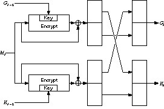
Figure 18.13 MDC-2.
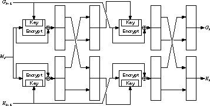
Figure 18.14 MDC-4.
These schemes have been analyzed in [925,1262]. They are secure against current computing power, but they are not nearly as secure as the designers have estimated. If the block algorithm is DES, they have been looked at with respect to differential cryptanalysis [1262].
Both MDC-2 and MDC-4 are patented [223].
The AR hash function was developed by Algorithmic Research, Ltd. and has
been distributed by the ISO for information purposes only [767]. Its basic
structure is a variant of the underlying block cipher (DES in the reference) in
CBC mode. The last two ciphertext blocks and a constant are XORed to the
current message block and encrypted by the algorithm. The hash is the last two
ciphertext blocks computed. The message is processed twice, with two
different keys, so the hash function has a hash rate of ½. The first key is
0x0000000000000000, the second key is 0x2a41522f4446502a, and c is
0x0123456789abcdef. The result is compressed to a single 128-bit hash value.
See [750] for the details.
Hi = EK (Mi ⊕ Hi - 1 ⊕ Hi - 2 ⊕ c) ⊕ Mi
This sounds interesting, but it is insecure. After considerable preprocessing, it is possible to find collisions for this hash function easily [416].
This hash function comes from Russia, and is specified in the standard GOST R 34.11-94 [657]. It uses the GOST block algorithm (see Section 14.1), although in theory it could use any block algorithm with a 64-bit block size and a 256-bit key. The function produces a 256-bit hash value.
The compression function, Hi = f(Mi,Hi - 1) (both operands are 256-bit quantities) is defined as follows:
The final hash of M is not the hash of the last block. There are actually three chaining variables: Hn is the hash of the last message block, Z is the sum mod 2256 of all the message blocks, and L is the length of the message. Given those variables and the padded last block, M' , the final hash value is:
H = f(Z ⊕ M' , f(L, f(M’, Hn)))
The documentation is a bit confusing (and in Russian), but I think all that is correct. In any case, this hash function is specified for use with the Russian Digital Signature Standard (see Section 20.3).
Ralph Merkle proposed a scheme using DES, but it’s slow; it only processes seven message bits per iteration and each iteration involves two DES encryptions [1065,1069]. Another scheme [1642,1645] is insecure [1267]; it was once proposed as an ISO standard.
It is possible to use a public-key encryption algorithm in a block chaining mode as a one-way hash function. If you then throw away the private key, breaking the hash would be as difficult as reading the message without the private key.
Here’s an example using RSA. If M is the message to be hashed, n is the product of two primes p and q, and e is another large number relatively prime to (p - 1)(q - 1), then the hash function, H(M), would be
H(M) = Me mod n
An even easier solution would be to use a single strong prime as the modulus p. Then:
H(M) = Me mod p
Breaking this problem is probably as difficult as finding the discrete logarithm of e. The problem with this algorithm is that it’s far slower than any others discussed here. I don’t recommend it for that reason.
The contenders seem to be SHA, MD5, and constructions based on block ciphers; the others really haven’t been studied enough to be in the running. I vote for SHA. It has a longer hash value than MD5, is faster than the various block-cipher constructions, and was developed by the NSA. I trust the NSA’s abilities at cryptanalysis, even if they don’t make their results public.
Table 18.2 gives timing measurements for some hash functions. They are meant for comparison purposes only.
| Algorithm | Hash Length | Encryption Speed (kilobytes/second) |
|---|---|---|
| Abreast Davies-Meyer (with IDEA) | 128 | 22 |
| Davies-Meyer (with DES) | 64 | 9 |
| GOST Hash | 256 | 11 |
| HAVAL (3 passes) | variable | 168 |
| HAVAL (4 passes) | variable | 118 |
| HAVAL (5 passes) | variable | 95 |
| MD2 | 128 | 23 |
| MD4 | 128 | 236 |
| MD5 | 128 | 174 |
| N-HASH (12 rounds) | 128 | 29 |
| N-HASH (15 rounds) | 128 | 24 |
| RIPE-MD | 128 | 182 |
| SHA | 160 | 75 |
| SNEFRU (4 passes) | 128 | 48 |
| SNEFRU (8 passes) | 128 | 23 |
A message authentication code, or MAC, is a key-dependent one-way hash function. MACs have the same properties as the one-way hash functions discussed previously, but they also include a key. Only someone with the identical key can verify the hash. They are very useful to provide authenticity without secrecy.
MACs can be used to authenticate files between users. They can also be used by a single user to determine if his files have been altered, perhaps by a virus. A user could compute the MAC of his files and store that value in a table. If the user used instead a one-way hash function, then the virus could compute the new hash value after infection and replace the table entry. A virus could not do that with a MAC, because the virus does not know the key.
An easy way to turn a one-way hash function into a MAC is to encrypt the hash value with a symmetric algorithm. Any MAC can be turned into a one-way hash function by making the key public.
The simplest way to make a key-dependent one-way hash function is to encrypt a message with a block algorithm in CBC or CFB modes. The hash is the last encrypted block, encrypted once more in CBC or CFB modes. The CBC method is specified in ANSI X9.9 [54], ANSI X9.19 [56], ISO 8731-1 [759], ISO 9797 [763], and an Australian standard [1496]. Differential cryptanalysis can break this scheme with reduced-round DES or FEAL as the underlying block algorithms [1197].
The potential security problem with this method is that the receiver must have the key, and that key allows him to generate messages with the same hash value as a given message by decrypting in the reverse direction.
This algorithm is an ISO standard [760]. It produces a 32-bit hash, and was designed for mainframe computers with a fast multiply instruction [428].
v = v <<< 1 e = v ⊕ w x = ((((e + y) mod 232) ∨ A ∧ C) * (x ⊕ Mi)) mod 232 - 1 y = ((((e + x) mod 232) ∨ B ∧ D) * (y ⊕ Mi)) mod 232 - 2
Iterate these for each message block, Mi, and the resultant hash is the XOR of x and y. The variables v and e are determined from the key. A, B, C, and D are constants.
This algorithm is probably in wide use, but I can’t believe it is all that secure. It was designed a long time ago, and isn’t very complicated.
This MAC produces a hash value twice the length of the block algorithm [978]. First, compute the CBC-MAC of the message. Then, compute the CBC-MAC of the message with the blocks in reverse order. The bidirectional MAC value is simply the concatenation of the two. Unfortunately, this construction is insecure [1097].
This MAC is also called a quadratic congruential manipulation detection code (QCMDC) [792,789]. First, divide the message into m- bit blocks. Then:
H0 = IH, where IH is the secret key Hi = (Hi - 1 + Mi)2 mod p, where p is a prime less than 2m - 1 and + denotes integer addition
Jueneman suggests n = 16 and p = 231 - 1. In [792] he also suggests that an additional key be used as H1, with the actual message starting at H2.
Because of a variety of birthday-type attacks discovered in conjunction with Don Coppersmith, Jueneman suggested computing the QCMDC four times, using the result of one iteration as the IV for the next iteration, and then concatenating the results to obtain a 128-bit hash value [793]. This was further strengthened by doing the four iterations in parallel and cross-linking them [790,791]. This scheme was broken by Coppersmith [376].
Another variant [432,434] replaced the addition operation with an XOR and used message blocks significantly smaller than p. H0 was also set, making it a keyless one-way hash function. After this scheme was attacked [612], it was strengthened as part of the European Open Shop Information-TeleTrust project [1221], quoted in CCITT X.509 [304], and adopted in ISO 10118 [764,765]. Unfortunately, Coppersmith has broken this scheme as well [376]. There has been some research using exponents other than 2 [603], but none of it has been promising.
RIPE-MAC was invented by Bart Preneel [1262] and adopted by the RIPE project [1305] (see Section 18.8). It is based on ISO 9797 [763], and uses DES as a block encryption function. RIPE-MAC has two flavors: one using normal DES, called RIPE-MAC1, and another using triple-DES for even greater security, called RIPE-MAC3. RIPE-MAC1 uses one DES encryption per 64-bit message block; RIPE-MAC3 uses three.
The algorithm consists of three parts. First, the message is expanded to a length that is a multiple of 64 bits. Next, the expanded message is divided up into 64-bit blocks. A keyed compression function is used to hash these blocks, under the control of a secret key, into a single block of 64 bits. This is the step that uses either DES or triple-DES. Finally, the output of this compression is subjected to another DES-based encryption with a different key, derived from the key used in the compression. See [1305] for details.
IBC-Hash is another MAC adopted by the RIPE project [1305] (see Section 18.8). It is interesting because it is provably secure; the chance of successful attack can be quantified. Unfortunately, every message must be hashed with a different key. The chosen level of security puts constraints on the maximum message size that can be hashed — something no other function in this chapter does. Given these considerations, the RIPE report recommends that IBC-Hash be used only for long, infrequently sent messages.
The heart of the function is
hi = ((Mi mod p) + v) mod 2n
The secret key is the pair p and v, where p is an N-bit prime and v is a random number less than 2n. The Mi values are derived by a carefully specified padding procedure. The probabilities of breaking both the one-wayness and the collision-resistance can be quantified, and users can choose their security level by changing the parameters.
A one-way hash function can also be used as a MAC [1537]. Assume Alice and Bob share a key K, and Alice wants to send Bob a MAC for message M. Alice concatenates K and M, and computes the one-way hash of the concatenation: H(K,M). This hash is the MAC. Since Bob knows K, he can reproduce Alice’s result. Mallory, who does not know K, can’t.
This method works with MD-strengthening techniques, but has serious problems. Mallory can always add new blocks to the end of the message and compute a valid MAC. This attack can be thwarted if you put the message length at the beginning, but Preneel is suspicious of this scheme [1265]. It is better to put the key at the end of the message, H(M,K), but this has some problems as well [1265]. If H is one-way but not collision-free, Mallory can forge messages. Still better is H (K,M,K), or H(K1,M,K2), where K1 and K2 are different [1537]. Preneel is still suspicious [1265].
The following constructions seem secure:
H(K1,H(K2,M)) H(K,H(K,M)) H(K,p,M,K), where p pads K to a full message block.
The best approach is to concatenate at least 64 bits of the key with each message block. This makes the one-way hash function less efficient, because the message blocks are smaller, but it is much more secure [1265].
Alternatively, use a one-way hash function and a symmetric algorithm. Hash the file, then encrypt the hash. This is more secure than first encrypting the file and then hashing the encrypted file, but it is vulnerable to the same attack as the H(M,K) approach [1265].
This MAC scheme uses stream ciphers (see Figure 18.15) [932]. A cryptographically secure pseudo-random-bit generator demultiplexes the message stream into two substreams. If the output bit of the bit generator ki, is 1, then the current message bit mi, is routed to the first substream; if the ki is 0, the mi is routed to the second substream. The substreams are each fed into a different LFSR (see Section 16.2). The output of the MAC is simply the final states of the shift registers.
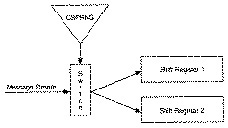
Figure 18.15 Stream cipher MAC.
Unfortunately, this method is not secure against small changes in the message [1523]. For example, if you alter the last bit of the message, then only 2 bits in the corresponding MAC value need to be altered to create a fake MAC; this can be done with reasonable probability. The author presents a more secure, and more complicated, alternative.